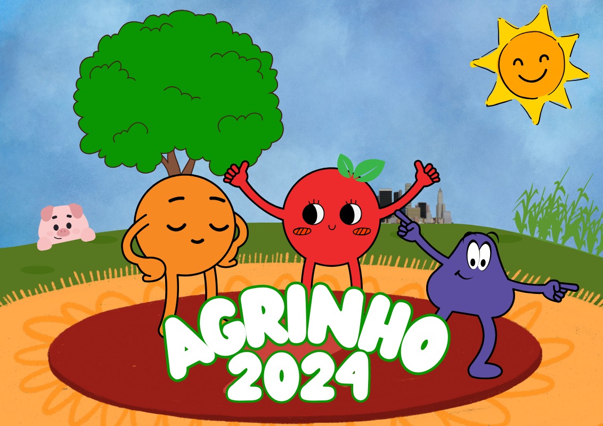

Você já parou para pensar de onde vêm o alimento que consumimos na cidade?
Muitas pessoas que vivem nas cidades grandes não sabem onde os alimentos comprados nas feiras ou supermercados foram produzidos, se esses alimentos vieram de longe, entre várias outras coisas.
As verduras, legumes e frutas que são comprados em feiras e supermercados são cultivados, na maioria das vezes, longe de nossas casas. Para cultivar esses alimentos é preciso preparar a terra,
plantar as sementes, adubar e regar as plantas para, no fim, colher o resultado.
Ovos, frangos, porcos, leite e outros produtos alimentícios, também são produzidos longe das cidades e muitas pessoas estão envolvidas nesse trabalho.
Para os alimentos que foram produzidos longe das cidades grandes, é necessário que se faça o transporte desses produtos.
A forma de transporte utilizada vai depender da região do país, mas geralmente o transporte é feito em caminhões.
Clique aqui para conhecer mais sobre o projeto Agrinho.
Ir para o Site